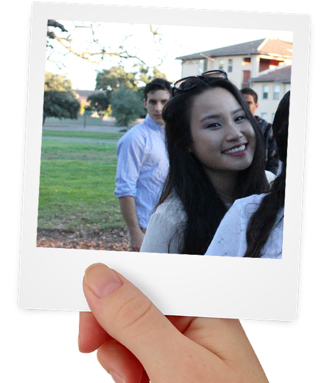

Hi, my name is Kimberly Wijaya.
There's a few things you should know about me. I'm twenty years
old and have had the privilege of living all around the world. I've
found my homebase in the lovely Bay Area, and it was here that I first
fell in love with programming. I'm equal parts logic and creativity -
and computer science was the perfect fit for me.
I'm a perfectionist and highly motivated - and I've been
channeling that determination into everything I do in hopes of coming
out a better person and a better programmer. In my spare time, I write
books and dabble in music.
I'm still making my way through college, but have had my fair
share of internships and experiences that have helped me hone in my
abilities as a programmer. I hope to one day work full-time in industry,
tackling problems and creating products for the world to enjoy.

Acknowledgements
I have many people to thank for the creation of this website.
- Samantha Wijaya for being my sounding board for design
decisions.
- Many images on this site were not taken by me, but were
released without copyright - I would like to acknowledge these
photographers, regardless. These images were taken from pixabay.com.
Copyright © 2015 Kimberly Wijaya
Experience
Software Engineering Intern, Microsoft
I was a Software Engineering Intern at Microsoft in Redmond,
Washington in the summer of 2015. I was in the Applications and Services
division. In particular, I was in the Global Services and Experience
(GSX) team. This team was in charge of creating the software to manage
the localization of both the software (UI) and content (UA) aspects of
Microsoft Office Suite products. This software included the interfaces
to deal with handoff, localization, and preparation. My objective was to
create a proof of concept towards a lightweight system that can
integrate aspects of the two systems that handle UI and UA localization,
respectively, to provide a simple, unified localization service. During
my internship, I was able to attend a number of meetings; create a
detailed analysis of the two systems which ended up being the only one
of its kind and the document that members of both teams referred to;
present three different presentations regarding my analysis, my
developer document, and and final demo. I also began using version
control to collaborate with others, as well as an extensive code review
process.
Section Leader
I'm a section leader for the introductory computer science
classes at Stanford University. I lead a section of twelve students who
are just starting out in their CS careers. During section, I go through
problems that are particularly relevant for them. The programming
language I predominately teach in is Java. The problems we go over often
have to deal with algorithms, data structures, common programming
paradigms, and style. In addition to teaching sections, I also have to
attend a number of meetings and workshops in order to be a better
teacher. Much time is spent grading both assignments and exams, as well,
which has given me a good grasp of style and decomposition.
Industry Mentorship Program Coordinator
I am one of the core board members of the Women in Computer
Science organization (WiCS)
at Stanford University. In particular, I am the head coordinator of the
Industry Mentorship Program. This program is geared towards matching a
Stanford student with a member of the tech industry in Silicon Valley.
This involves an intricate matching algorithm as well as the
organization of a number of events to help facilitate these
relationships. Being the head coordinator has allowed me to hone in on
my abilities to delegate tasks, as well as my ability to communicate
with members of industry. I am constantly in contact with various
recruiters in the Bay Area in order to organize panels, workshops,
scholarships, and sponsorships. As a member of the board of WiCS, I am
also helping to increase diversity in the tech industry and CS
community.
Campus Marketing Intern
During my sophomore year at Stanford, I worked closely with the
CEO of Relish, Inc, a mobile application that focuses on using short
videos to explore various attractions in a city. These attractions
include restaurants, tourist spots, and cultural hubs. I participated in
weekly meetings with the team to help make design decisions as well as
marketing campaigns. Eventually, I also helped to curate and create
videos for the application.
Laboratory Intern
I was a laboratory intern at Sahabat Lingkungan Labs in Surabaya,
Indonesia. Prior to discovering my love for computer science when I
moved to Stanford, I was convinced I wanted to be a doctor. Though these
aspirations have changed, this internship helped me achieve the work
ethic that I have today. It made me adapt to a fast working environment
where a mistake had to be rectified immediately. I was constantly
shuttling between stations, each of which required very specific skills.
Patience and meticulous attention to detail was key. During this
internship, I helped to create medicine to repair cell damage due to
myocardial ischemia and to suppress tumors. I also helped with quality
control by ensuring the products were on par with international
standards.
Coordinator of Season of Service
Season of Service was a community service project that I
coordinated for two years. This project was geared towards helping
children that were born with either a cleft lip or palate. Often
ostracized from the community, many of the families with these children
are unable to pay for their medical care and operations. Season of
service involved a walkathon in which companies and individuals pledged
a sum amount of money for each km that their participant completes.
Organizing this event meant that I had to approach companies for
sponsorships and lead a team to ensure everything went smoothly. The
project raised over 180,000,000 IDR each year it was held.
Coordinator of World Vision
World Vision was a community service project that involved
teaching a class of under priveleged young adults about technology. I
was both the lead coordinator and the lead teacher. We taught students
how to type, use the internet, and use common software - such as
Microsoft Office. The second year I coordinated the program, we noticed
that our students had a particular interest in graphic design and we
focused the lessons on Adobe InDesign and Adobe Photoshop. In order to
have this project be successful, extensive work had to be put in for
schedules and curriculum work. In the end, each student was given a
certificate of completion, which they have since presented to employers
to get jobs that would not have been available to them otherwise.
Coordinator of Save a Child
This was an independent project I did on my own. In Indonesia,
there is massive income inequality. Many children end up having to beg
for money on the streets rather than go to school. As a result, I
created a project geared towards fundraising money for the tuition for
these children. I partnered with a company in Manila, Philippines to
create themed snap bracelets to sell as incentives. I adopted a model
where individuals could donate any amount of money and receive a snap
bracelet in return. This project ended up raising enough money to pay
for the tuitions of sixty children. I still receive their academic
report cards today.
Education
I'm a junior at Stanford University in the sunny city of Palo
Alto. I'm pursuing a Bachelor of Science in Computer Science
with a minor in Mathematics, to be conferred in June 2017. My
concentration is information because I believe the world starts
and ends with data. Here's a few courses that I find particularly
relevant:
I am currently planning on pursuing a Master's Degree in Computer
Science after I complete my undergraduate career at Stanford.
Notable Projects
Unified UI-UA Localization Service
Languages: C#, but also included SQL, JavaScript, HTML,
JQuery, Ajax, and Razor to help build the frontend and backend. It
utilized an MVC/MVVM model under ASP.NET and depended on Entity
Framework.
The objective of this project was to merge two existing systems,
each of which handled the management of software (UI) and content (UA)
localization projects, respectively. My task was to create a web
application and a merged underlying database so that existing users of
either system would be able to use this merged system to manage both UI
and UA localization projects. This involved overhauling the already
established databases and tweaking the frontends. To complete this
project, I had to learn a variety of new programming languages, as well
as closely analyze the two existing systems.
Quiz Website
Languages: This was written in primarily Java, but also
included SQL, JQuery, CSS, HTML, and JSP.
This project was essentially a quiz website which allowed users
to create accounts, track progress, create quizzes, and make quizzes. It
was backed by a MySQL database. It featured a sleek design and various
additional features, including tag support, administrative settings,
achievements, user customization, and high scores. The backend was
supported by a large number of Java classes and entities, which worked
with the database to produce the web application.
Auction Wesbite
Languages: This was written primarily in Python, but
required a large amount of SQL, as well as HTML.
The focus of this project was less on the website itself, but
instead on the underlying database. Data was parsed in python to be
inserted into the Sqlite database. This project dealt with hundreds of
thousands of data points regarding an Auction - including information
about items, bidders, sellers, categories, and etc. The database
integrated various constraints and triggers to ensure it would not be
corrupted. The web application allowed users to place bids, search
through bids, change the time of the database, explore any aspects of
the auction, and open or close auctions.
MapReduce
Languages: C++
It uses multiprocessing, networking, threads, concurrency,
distributed computing, the myth computer cluster, and the shared AFS
system in order to build an operational MapReduce framework. This
particular program utilized the myth cluster at Stanford Unviersity in
order to parse a text file such that the output would be the word counts
of every single word that appears in the file.
Heap Allocator
Languages: C
This project involved designing and implementing an allocator
that responds to malloc, realloc, and free. In particular, it obtains a
large contiugous segment of memory from the OS and parcels out this
segment to service dynamic allocation requests. It was implemented using
a segregated list as its underlying implementation. This segregated list
is in the form of an array of free lists, where the first fifteen have
fixed sizes while the remaining have ranges of powers of two. It depends
on splitting and coalescing to get as much from the acquired memory as
possible. The freelists are doubly linked lists to help with traversal,
with boundary tags to identiy free and allocated blocks. Much time was
spent on optimization to allow for greater efficiency, throughput, and
latency.
Personal Website
Languages: HTML, JQuery, CSS
This project is this website! It serves as my online portfolio.
It includes information about my education, my personality, and the
projects I liked working on the most. I'll be the first to admit that
front-end development was not my forte and I developed this website in
order to test my design abilities and to learn to better use HTML and
CSS to create a website that both functioned correctly and looked good.
Logistic Regression
Languages: C++ (Stanford Library)
This, along with the next project to be mentioned, was my first
dabble into AI and machine learning. It utilizes functions and data
structures provided by the Stanford C++ Library to classify binary
vectors using gradient descent. Training data is input in order to make
the model more accurate.
Naive Bayes Classifier
Languages: C++ (Stanford Library)
This utilizes functions and data structures provided the Stanford
C++ Library to classify binary vectors using Maximim Likelihood
Estimation (MLE) and Laplace paramater estimation. Training data is
input in order to make the model more accurate, and the user is able to
choose which method of estimation they would like the model to employ.
Resume
A PDF version of this resume can be downloaded here .
KIMBERLY WIJAYA
P.O BOX 11162 // Stanford, CA 94309 // kcwijaya@stanford.edu //
(650) 490-0437
Education
|
09/13-present
|
Stanford University, Stanford, CA
- Pursuing a B.S. in Computer Science with a minor in
Mathematics, to be conferred 6/17
- Relevant Coursework: Mathematical Foundations of Computing,
Introduction to Probability for Computer Scientists, Computer
Organization and Systems, Principles of Computer Systems, Design and
Analysis of Algorithms, Introduction to Databases, Object-Oriented
System Design, Applied Matrix Theory
- GPA: 3.7/4.0
|
Projects
- Naive Bayes Classifier: a C++ program using the
Stanford C++ library to classify binary vectors using MLE and Laplace
parameter estimation
- Heap Allocator: a C program that provides the abilityt
o allocate, deallocate, and manage memory on the heap.
- Quiz Website: a web project that utilizes Java, SQL,
HTML, CSS, JQuery, and JSP technology to create a website for users to
create accounts, track progress, create quizzes,a nd take quizzes. The
website is backed by a MySQL database.
- Auction Base: a program that utilizes Python, SQL, and
HTML to create a Web UI for users to create bids, search through
auctions, and close/open auctions. The database utilizes various
constraints and triggers to accomplish this.
- MapReduce: a C++ program that utilizes multiprocessing,
networking, threads, concurrency, and distributed computing to build a
MapReduce framework
- Unified UI-UA Localization Service: a web application
that depends on Entity Framework and MVVM while using C# and SQL in the
backend and JavaScript, JQuery, and CSS in the frontend, to serve as a
project management system for both UI and UA Localization Projects.
Experience
|
08/15-Present
|
Section Leader, Stanford University, Stanford, CA
- Led a section of twelve students for an introductory CS
course at Stanford
- Worked closely with lecturers and course advisors to plan
sections and grade assignments
|
| 07/15-Present |
Industry Mentorship Program Coordinator, Women in
Computer Science, Stanford, CA
- Collaborated with successful entrepreneurs in a rapidly
growing startup
- Participated in weekly meetings with the CEO, employees, and
fellow interns to facilitate grwoth
|
| 06/15-09/15 |
Software Engineering Intern, Microsoft, Redmond, WA
- Designed and implemented a system to act as a Unified UI-UA
Localization service
- Worked closely with database using SQL Server to integrate
two independent systems
- Designed and implemented both the client side and server
side features of the web applications
- Collaborated with members of the GSX team to develop a proof
of concept of such a system
- Worked with existing systems that used ASP.NET MVC/MVVM and
Entity Framework
|
| 07/14-07/15 |
Campus Marketing Intern, Relish, San Francisco, CA
- Collaborated with successful entrepreneurs in a rapidly
growing startup
- Participated in weekly meetings with the CEO, employees, and
fellow interns to facilitate grwoth
|
| 01/12-08/12 |
Laboratory Intern, Sahabat Lingkungan Labs, Surabaya,
Indonesia
- Developed strong observation skills and work ethic
- Adapted to a quick, challenging work environment despite
heavy workload and pressure
- Conducted various experiments to assist in the produciton of
medicine to repair cell damage due to myocardial ischemia and to
suppress tumors.
|
Leadership
|
08/10-06/13
|
Coordinator, Cleft Care Indonesia, Surabaya, Indonesia
- Raised over 180,000,000 IDR in a single day for two
consecutive years
- Acted as leader and primary communication liaison between
the organization and community
- Organized an annual walk-a-thon that required approaching
large companies for sponsorships
- Oversaw a group of 5-10 students and esnured a
collaborative, efficient work ethic was practiced
|
Additional Information and Skills:
- Programming Languages: Java, SQL, C++, C, C#, HTML,
CSS, Python
- Software: Microsoft Word, Powerpoint, Excel, Prezi,
Visio, Visual Studio, SQL Server
- Languages: Fluent in English, basic skills in French,
limited working proficiency in Bahase Indonesian
- Awards: Received the Global Citizenship Award, given
to one student at member schools of EARCOS for being strongly committed
to engagement and action to make the world a better place. Nominated
for Booth Prize The Boothe Prize at Stanford University, which
recognizes and rewards outstanding expository and argumentative writing
by first-year students.